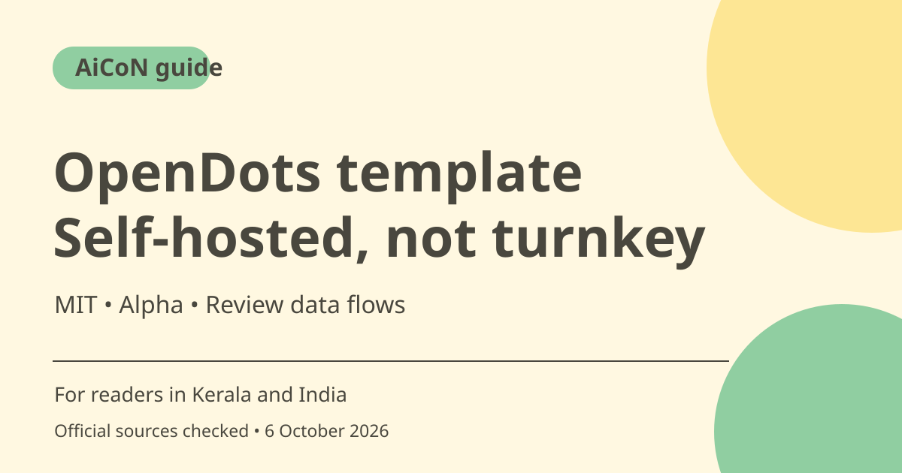

OpenDots: self-hosted AI agents, alpha limits and costs
OpenDots is CopilotKit's MIT-licensed template for persistent AI agents. It is an alpha, single-owner starting point that you host and configure, not a ready-made free household or team service. Models, conversation storage, calls and other integrations need separate setup and may add costs.

What is OpenDots?
CopilotKit describes Dots with their own roles, permissions and conversations, alongside editable Spaces and Pages. A Dot can have an isolated computer with browser and file access when the corresponding service is configured. These are template capabilities, not a guarantee of automatic setup or reliable completion of every delegated task.
Who should try it?
Developers comfortable with a terminal, configuration files and service credentials can evaluate it. Someone looking for a finished mobile assistant should not expect a simple install-and-use experience. Start with local sample pages and non-sensitive tasks, then decide which model, conversation store and optional services you actually need.
Local application does not mean all data is local
The README says conversations, tool calls and events are stored in the configured Intelligence deployment. Hosted setup sends them to CopilotKit's cloud; local evaluation keeps that layer on your machine. A remotely configured model still receives conversation context and tool results. Speech, messaging and research providers can receive information when those features are used.
Optional computers and approvals
The repository describes per-Dot browser, file and shell permissions, with persistent workspace files and a browser profile. It also demonstrates a review card before saving a draft page. That example is not proof that every possible side effect is automatically protected. Keep permissions narrow and inspect the actual implementation before giving a Dot production access.
Alpha limits are important
The official repository calls OpenDots a single-owner starting point. It says shared editing, invitations, uploads and interactive page embeds are not included. Scheduled work is recurring instructions rather than a complete event-trigger or goal system. Slack and spoken compute delegation still need connected-service verification. Do not sell it to your team as a polished multi-user product.
Costs and operational responsibilities
MIT source access does not eliminate model, hosting, storage, speech or other service costs. You maintain deployment security, backups, credentials and usage controls. For an interrupted scheduled run, the repository warns that effects may already exist before an explicit retry. Review stored pages and actions before retrying, so you do not duplicate an earlier write.
How to use it, step by step
- Open the official OpenDots product page and linked repository. Read the alpha limitations before planning a deployment.
- Use the current README's setup instructions; the checked version specifies Node.js 24 and npm.
- Start with a local sample and create Spaces or Pages before connecting private services.
- Choose the conversation-storage deployment and model deliberately. Review the data sent to each configured provider.
- Add server-side credentials through the documented secure configuration, never through public code or a shared chat.
- Connect calls, Slack or Dot computers only when needed, following their separate setup guides and permission controls.
- Test draft review and interrupted-run behaviour on non-sensitive data. Keep actions reversible, inspect results and set spending/usage controls before production use.
Cost, eligibility and limits
| Source licence | MIT. The template is self-hosted rather than a hosted turnkey product. |
|---|---|
| Service costs | Model, hosting, Intelligence, speech and other integrations may be charged separately. No universal free or fixed INR total is established. |
| Privacy | Local storage does not make a remote model local. Review each provider and telemetry settings. |
| Readiness | Alpha and single-owner. Several collaboration features are absent; some connected-service paths still need live testing. |
Frequently asked questions
Is OpenDots a finished app?
No. CopilotKit calls it an alpha template that you host and configure.
Does self-hosting keep every conversation private on my machine?
Not necessarily. Hosting, model and other provider choices determine the data flows.
Can I give a team shared editing immediately?
The checked README says shared editing and invitations are not included.
Official sources
Checked 6 October 2026. Features and prices can change. This is a guide, not a personal product test.